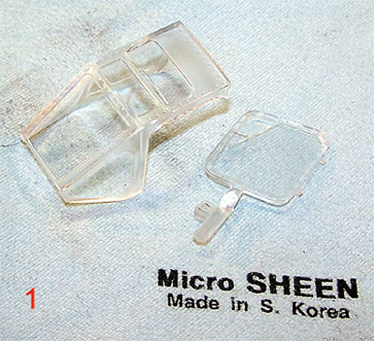
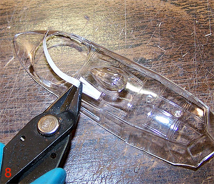

Swanny’s Approach To Masking Canopies
Or
This Canopy Is Going To Drive Me Nuts
Images and text Copyright © 2005 by Matt Swan
I have been masking canopies for so long with strips of masking tape that I have forgotten just how tough it was to acquire this skill. Admittedly on some models with nightmarishly complex canopies I’ll take the easy way out and buy a Black Magic mask set but for the most part – it’s masking tape and razor knife for me. In this article I will take you on a step-by-step tutorial on preparing and masking your canopy. We will be looking at two slightly different canopies to cover two of the most common shapes you’ll find, the square corner and the slightly rounded corner.
Step #1 First we have to properly prepare the canopy. You may want to leave a section of sprue on your clear part to act as a handle or you may want to totally remove the canopy from the tree. Even if you are going with the handle approach remove all other injector ports from the parts. Make sure you trim and sand the cut areas smooth. Once this has been accomplished you’ll need to remove all dust and fingerprints from the plastic, I like to use a Micro Sheen cloth (see picture #1) for this but an old piece of flannel material would work just as well. Just be sure it is free of dust and lint.
Step #2
Lay out a piece of tissue or paper towel on your worktable for this next step. Using a pair of electronics tweezers grasp the edge of the part or the handle you left on the part and dip it into a cup of Future Floor Polish. If you are not familiar with Future Floor Polish it would probably be a good idea to read The Complete Future before proceding. Let the excess drain off (see picture #2) and place the part upright on the paper towel. Now cover this with another cup to prevent dust from settling on it while the future dries.

Step #3 Notice that I’ve used a piece of a toothpick to help prop up a flat clear piece so that the surface is not making contact with the paper towel (see picture #3). The paper towel or tissue paper will wick off the excess Future so you do not have a heavy spot after this dries. You’ll need to leave these parts alone for at least 24 hours so the Future has time to cure.
Step #4 While this is happening we can prepare some tape. I am using standard 3M masking tape that is one and one half inches in width. Remove a strip about three inches in length and press down onto a clean, flat surface. I am using my worktable top (my mother would have fits) but a piece of plate glass would work well also. In the past I have used a Corning dinner plate turned upside down for this. Now, with a straight edge cut the tape into thin strips about 1mm in width (see picture #4).
Step #5 Hopefully we have had patience and made it thought the 24 hour waiting period. If you are in a more humid climate you may see cloudy spots on the canopy. This means it is not fully cured and you have to wait another day – bummer. Otherwise we are ready to start masking. Let’s start with a canopy that has nicely squared corners – something easy. Place a strip of tape along the frame line on one windowpane. Try to start with a longer side rather than a short side (see picture #5). Once this is placed, using a fresh razor knife cut the ends off right at the perpendicular frame line. What? You say you cannot freehand cut a straight line? Remember, you’re only cutting 1mm, that is not very far to cut a straight line and this one piece of tape is the hardest piece on this frame – the rest are easy.
Step #6 Using your electronics tweezers grasp another strip of tape and place the square end into the short windowpane corner opposite the taped edge and press the tape down. Now peel the excess end of the tape back just a little bit and cut it off (see picture #6). I am using a pair of Xuron sprue cutters but fingernail clippers or fine snips would work just as well. The objective here is to cut the tape off so the end falls inside the 1mm width of the previous piece of tape – no other cutting required here.
Step #7 Now you simply repeat step #6 for the next long side (see picture #7). Repeat one more time for the remaining short side. Now the entire windowpane has been framed with strips of masking tape.
Step #8 Now we need to fill in the center section. You could use a liquid masking agent at this point but I simply use wider strips of masking tape laid over the opening and chop off the ends with my snips (see picture #8).

Step #9 Repeat this procedure, steps 4 through 8 for each square corner pane on your canopy. Sometime this can take a while. I have spent entire evenings before masking complex canopies. In picture #9 we have a masked canopy frame.
Step #10 Working with round corner panes is basically the same but just slightly more difficult. We start in the same manner by placing that first piece of tape (slightly wider this time, about 3mm) on a long windowpane side but here we burnish the tape into the rounded corner with the tip of your tweezers or with a round toothpick (see picture #10). This really is to help you see the frame line more than anything.
Step #11 Take your fresh razor knife and gently trace the rounded corner. You do not need to apply a lot of pressure here but you do need to trace this corner two or three times with the tip of the razor knife (see picture #11). This will ultimately cut through the tape and the excess can be removed.
Step #12 Repeat the burnish and cutting process with the opposite end of the tape (see picture #12).

Step #13 From here it goes pretty much like working with the square corner frames other than you are placing the cut end of the tape over the last piece and burnishing the excess end into the corner and trimming it. This is a little more work than the square corner frame but in the end you have a nicely framed pane (see picture #13).
Step #14 And just like the square cornered frame the central area is covered with larger strips of tape until all exposed windowpane is covered (see picture #14).

Repeat the above steps until you have covered all your exposed windowpanes. Before painting go over the edges of the tape and make sure they are all pressed down securely. Take your Micro Sheen cloth or flannel cloth and wipe the interior of the canopy to remove fingerprints and dust particles. If you wish to paint your canopy on the model now is the time to attach it, I would suggest Testors Clear Parts Cement or Elmer's White Glue. If you are going to paint it off the model you should cover the interior with a single large piece of masking tape to protect it from random over-spray.
And now for a few comments about painting. Your first coat of paint should be a light coat of Future. This will help to seal your tape so that no paint creeps underneath it later. Once this has dried apply two light coats of whatever color the inside of the canopy frames would be like Interior Green or RLM 66 or whatever your particular aircraft calls for. Let this dry then apply your exterior paint color. Next you want to add any weathering effects and paint chipping to the canopy and follow this with a coat of whatever your final dull coat or sealant on the model will be. Let dry and carefully remove the masks. I use the tip of my razor knife to carefully lift one corner of the tape and then gently pull it off with tweezers.

If, by some freak of fate you have had paint crawl under your mask all is not lost. Take a round toothpick and chop the end off at an angle to form a wedge. Dip this into some Goo-Gone (available in most office supply stores) and work the offending area with the wedge shaped tip. Should you have any glue residue from the tape left on your canopy (it could happen) a little Goo-Gone on a cotton swab is excellent for taking care of it.Wipe the canopy with a piece of tissue. If there are any marks left behind you can apply some Future with a fine paintbrush to restore the clarity of your canopy.
And there you have it, Swanny’s approach to masking canopies. I hope this helps you to achieve a better result and relieve some of the stress in your life.